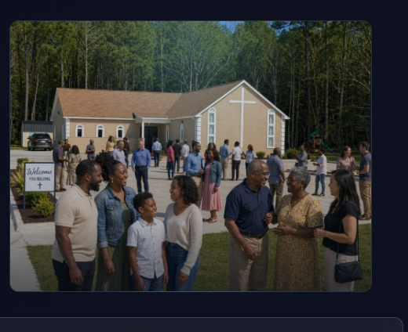

Biblical Teaching
Teaching rooted in scripture, practical for everyday life, and centered on Jesus.
Reliability Through Innovation
New Community Church exists to serve people at every stage of faith with Christ-centered teaching, care, and digital access to worship throughout the week.
Join us on Sunday at 11:00 AM and Wednesday at 7:00 PM.

Teaching rooted in scripture, practical for everyday life, and centered on Jesus.
A community where we celebrate victories and carry one another through difficult seasons.
Live and on-demand media experiences that extend ministry beyond Sunday gatherings.
Curated YouTube picks below. For the full archive and live experience, visit the Livestream page.
Loading featured clips.
On-site pages—watch live, view events, and stay encouraged through the week.
Browser alerts for live services and updates (optional).
Current permission: default